Summer basketball gives Da'Marius another opportunity to compete,
improve his skills, and continue building confidence on the court.
Summer 2026 Highlights
Bro vs Bro - June 8-9 2026
In an unusual matchup, Da'Marius and Darius go head to head for a chance at a metal.
Photo Highlights
Tag Me In (Brother Colab)
Darius and Da'Marius got the rare chance to play together.
Both brought their A game!
7/18/2026 Highlights
More Summer 2026 Highlights
Basketball - Spring 2026 Champions
Da'Marius spent the winter focused on recovery and preparation
after a busy season. The time off helped him return refreshed
and stronger for spring basketball, where he played an important
role in helping his team capture the championship.
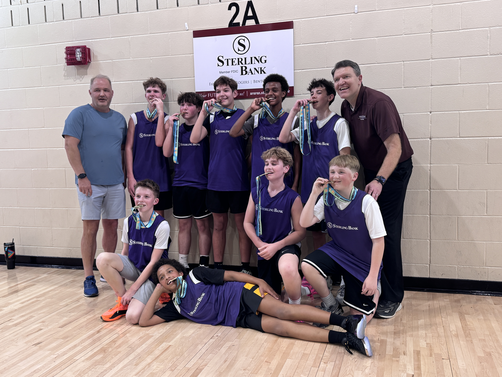
Basketball - Winter 2026
Winter basketball provided another opportunity for Da'Marius
to sharpen his skills, compete against strong opponents,
and continue developing his game.
Youth Basketball
From an early age, basketball has been one of Da'Marius'
favorite activities. His love for the game continues to grow
as he gains experience and develops new skills.
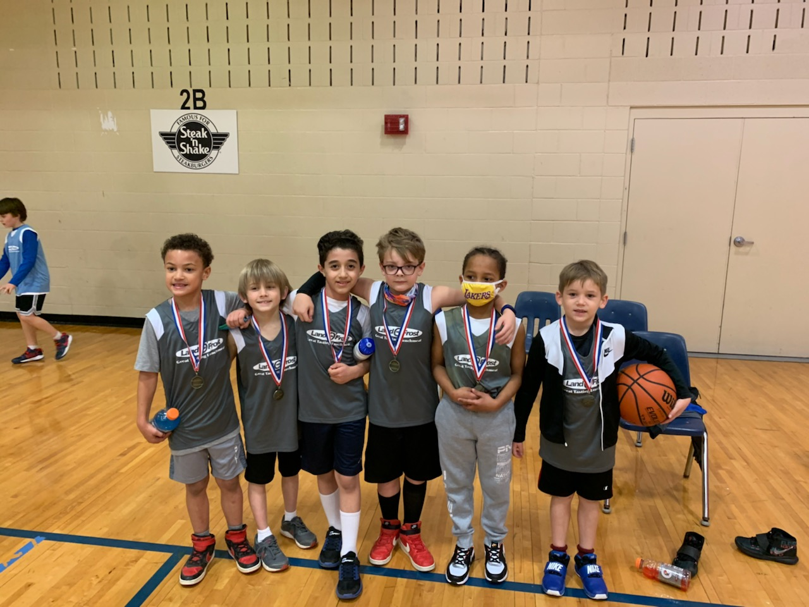
Football - Fall 2024
Football gave Da'Marius another outlet for his competitive
spirit and athleticism.
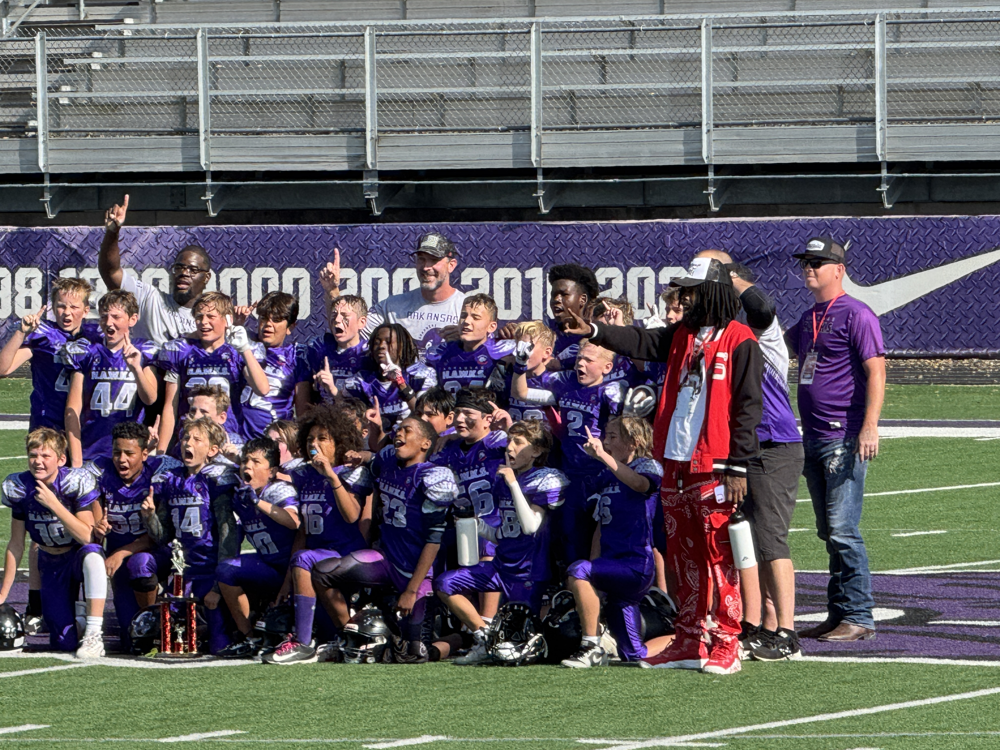
Competitiveness
Competition has always been a big part of Da'Marius' life.
Whether he's on the basketball court, football field, out on
the water fishing, or winning contests at the Farmer's Market,
he brings energy and determination to everything he does.
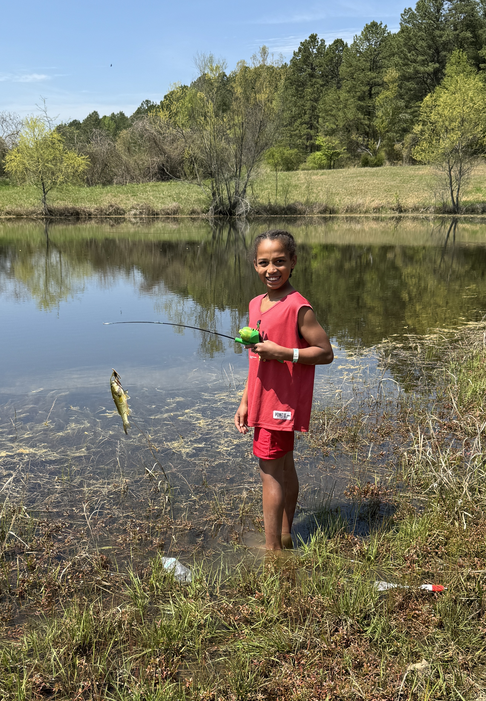
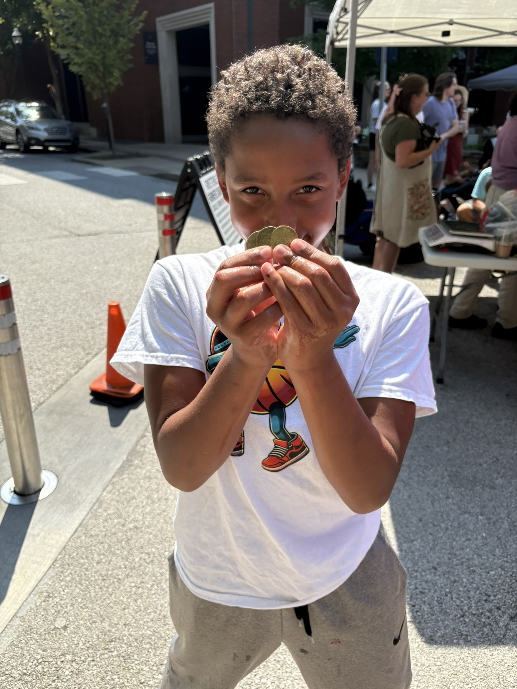
Cooking & Learning
From helping in the kitchen to learning new recipes,
Da'Marius enjoys discovering how food is made and taking
pride in creating something from scratch.
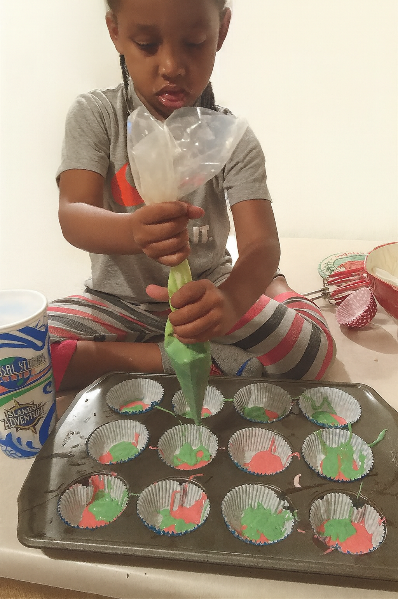
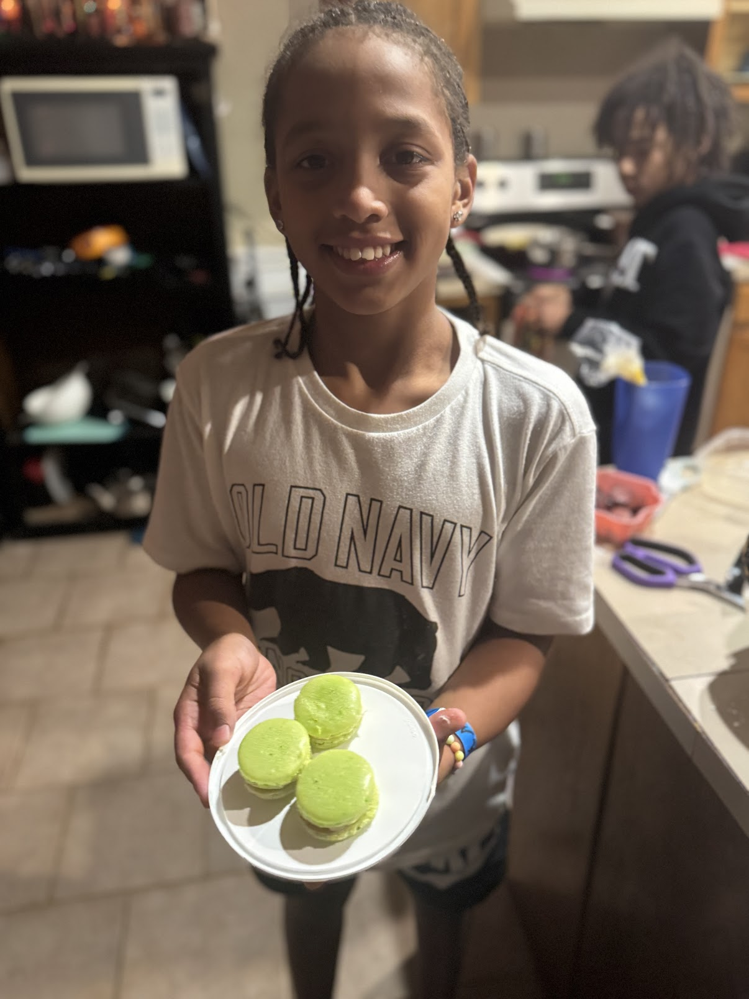
Arts, Crafts & 3D Printing
Creativity comes naturally to Da'Marius. Through arts, crafts,
and 3D printing, he enjoys bringing ideas to life while
learning patience and problem-solving. One of his favorite
projects was creating a tiny home for Grandma.
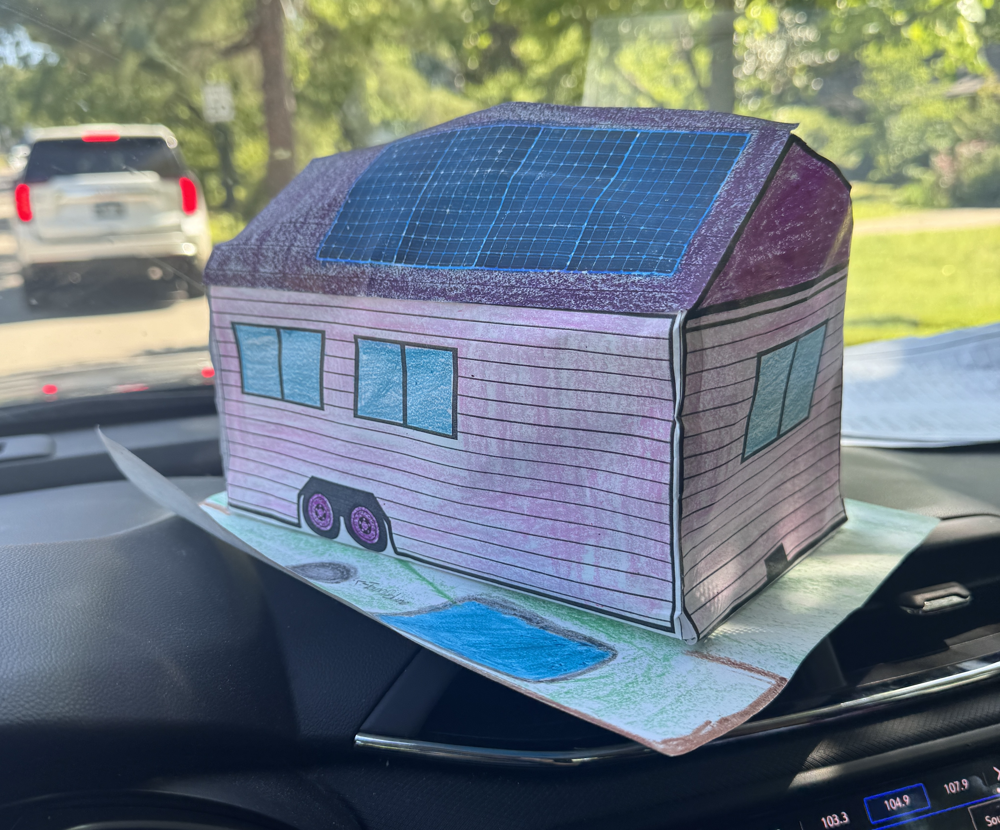
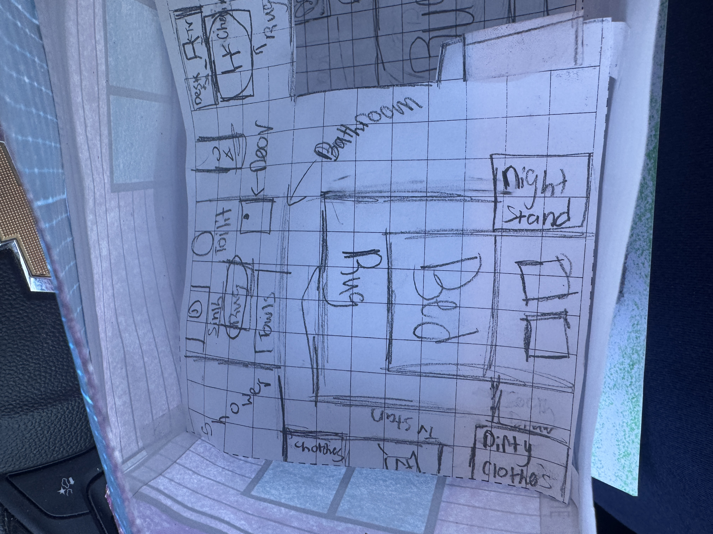
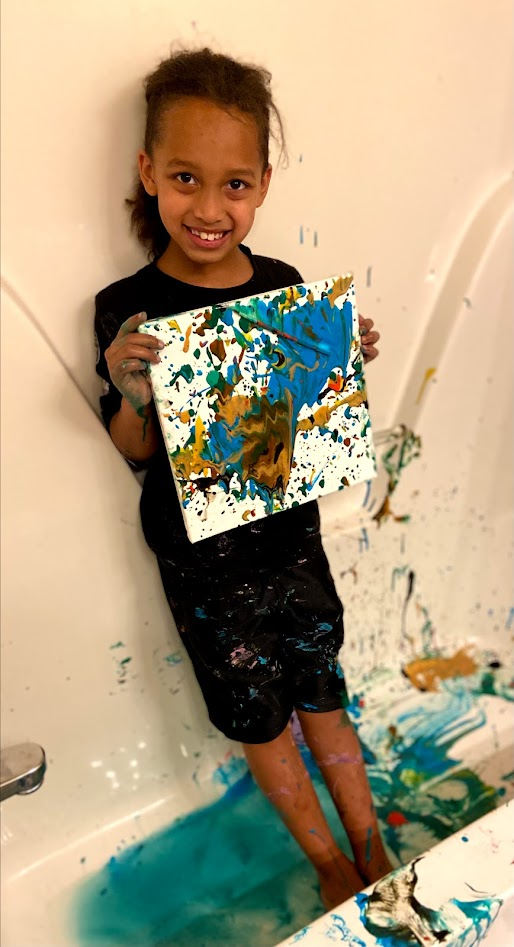
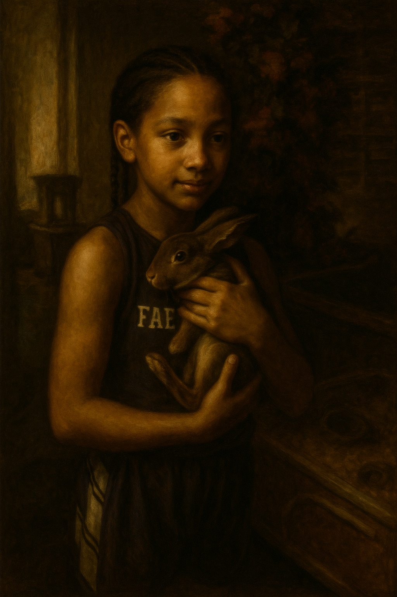
Family & Responsibility
Mars is always willing to lend a hand. Whether helping care
for younger family members, assisting Grandma at work, or
stepping up when someone needs help, he consistently
demonstrates responsibility, kindness, and maturity.